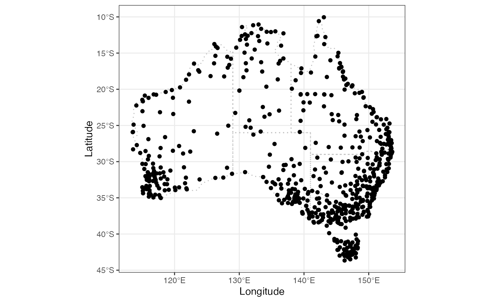
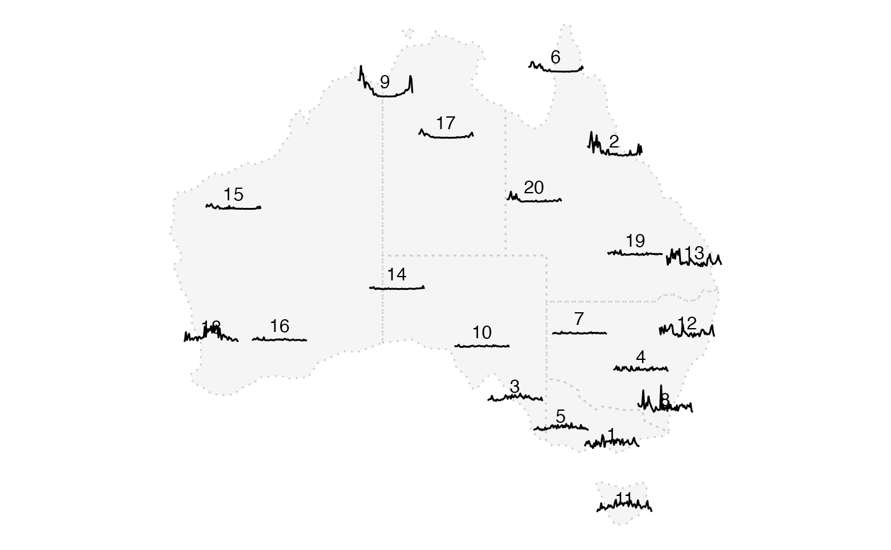
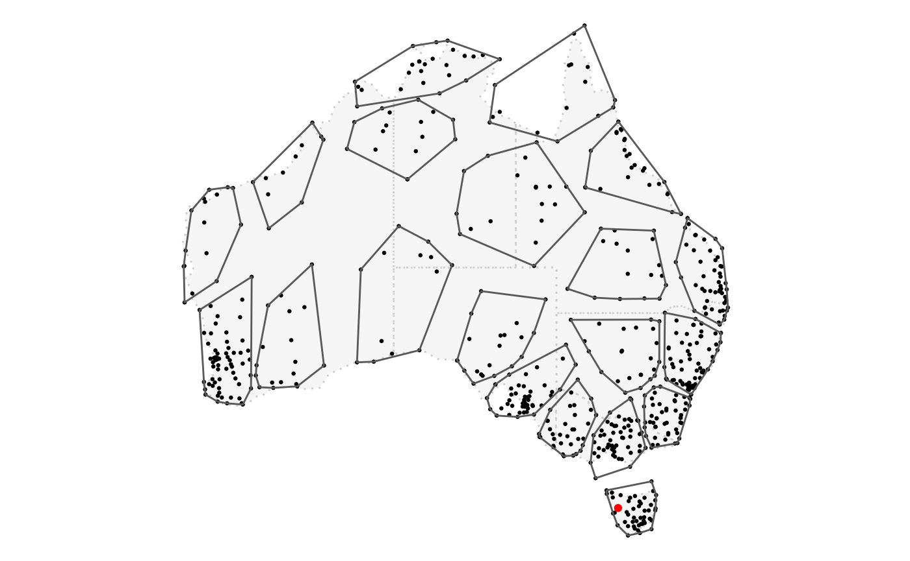

4. Application: Spatial and temporal aggregation
4-spatial-temporal-aggregation.RmdOn top of aus_climate data in this package, climate_full from package weatherdata has daily climate data of 639 Australia stations from 2016 to 2020. This is where these stations locate in an Australia map:
state_map <- rmapshaper::ms_simplify(ozmaps::abs_ste, keep = 2e-3)
plot_map(state_map) +
geom_point(data = weatherdata::climate_full , aes(x = long, y = lat))
This is a lot of stations to look at for one climate variable and they can’t all fit into a glyph map. What we can do is to group stations into clusters and look at the aggregated series in the glyph map. In this vignette, I will introduce how to perform spatial (and temporal) aggregation using hierarchical data structure in cubble.
First let’s add a new column ll for calculating distance matrix in the next section and aggregate the daily precipitation into weekly measure. These steps should be familiar from the vignette Data manipulation with cubble.
station_nested <- weatherdata::climate_full %>%
mutate(ll = s2_lnglat(long, lat)) %>%
stretch() %>%
mutate(wk = lubridate::week(date)) %>%
group_by(wk) %>%
summarise(prcp = sum(prcp, na.rm = TRUE)) %>%
tamp()Hierarchical data structure
Imposing a clustering structure can be thought of as building a hierarchical structure where stations are nested within clusters. As an example to illustrate here, we use a kmean clustering algorithm based on the distance matrix and specify the number of centers to be 20. More complex algorithms can also be used for more complex problem, as long as a mapping from each station id to the cluster id can be constructed. We then join this data to our station data:
dist_raw <- scale(s2_distance_matrix(station_nested$ll, station_nested$ll))
cluster_res <- tibble(id = station_nested$id,
cluster = kmeans(dist_raw, centers = 20, nstart = 50)$cluster)
station_nested <- station_nested %>%
left_join(cluster_res)
station_nested %>% head(5)
#> # cubble: id [5]: nested form
#> # bbox: [126.1, -16.42, 128.16, -13.75]
#> # temporal: wk [dbl], prcp [dbl]
#> id lat long elev name wmo_id ll ts cluster
#> <chr> <dbl> <dbl> <dbl> <chr> <dbl> <s2_ln> <list> <int>
#> 1 ASN00001006 -15.5 128. 3.8 wyndham aero 95214 (128.1… <tibble> 16
#> 2 ASN00001007 -13.8 126. 6 troughton island 94102 (126.1… <tibble> 16
#> 3 ASN00001018 -16.4 126. 546 mount elizabeth 94211 (126.1… <tibble> 16
#> 4 ASN00001019 -14.3 127. 23 kalumburu 94100 (126.6… <tibble> 16
#> 5 ASN00001020 -14.1 126. 51 truscott 95101 (126.3… <tibble> 16One thing we hope to do with the cluster is to find the coordinates of the centroid. These are variables variant to the station but invariant to the cluster and it would be nice to have a function that structure each cluster as a row. switch_key() is the function that does this: it lets you to specify a new key, say cluster and nests all spatial variables variant to cluster into a column. Temporal observations from different stations while within the same cluster are bound in the nested column ts.
cluster_nested <- station_nested %>%
switch_key(cluster)
cluster_nested %>% head(5)
#> # cubble: cluster [5]: nested form
#> # bbox: [113.53, -28.31, 153.21, -14.96]- check gap on long
#> # temporal: id [chr], wk [dbl], prcp [dbl]
#> cluster .val ts
#> <int> <list> <list>
#> 1 1 <tibble [20 × 7]> <tibble [1,060 × 3]>
#> 2 2 <tibble [15 × 7]> <tibble [795 × 3]>
#> 3 3 <tibble [13 × 7]> <tibble [689 × 3]>
#> 4 4 <tibble [13 × 7]> <tibble [689 × 3]>
#> 5 5 <tibble [28 × 7]> <tibble [1,484 × 3]>This structure makes it easy to compute cluster level variable, although there are a few steps to calculate the centroid coordinates: we need to find the convex hull that wraps around the cluster, make it a polygon, find the centroid of the polygon and finally, extract the x and y coordinate of each centroid:
cluster_nested <- cluster_nested %>%
mutate(chull = list(chull(.val$long, .val$lat)),
ll_cluster = sf::st_as_sfc(
s2_make_polygon(c(.val$long[chull]),
c(.val$lat[chull]), oriented = FALSE)),
centroid = s2_centroid(ll_cluster),
cent_long = s2_x(centroid),
cent_lat = s2_y(centroid))
cluster_nested %>% head(5)
#> # cubble: cluster [5]: nested form
#> # bbox: [113.53, -28.31, 153.21, -14.96]- check gap on long
#> # temporal: id [chr], wk [dbl], prcp [dbl]
#> cluster .val ts chull ll_cluster centroid cent_long
#> <int> <list> <list> <list> <POLYGON [°]> <s2_geo> <dbl>
#> 1 1 <tibble> <tibble> <int> ((119.7989 -23.4169, 119.… <POINT … 116.
#> 2 2 <tibble> <tibble> <int> ((145.3106 -14.9672, 141.… <POINT … 143.
#> 3 3 <tibble> <tibble> <int> ((146.0197 -18.2553, 146.… <POINT … 147.
#> 4 4 <tibble> <tibble> <int> ((136.8192 -15.7426, 131.… <POINT … 133.
#> 5 5 <tibble> <tibble> <int> ((152.7161 -24.1116, 150.… <POINT … 151.
#> # … with 1 more variable: cent_lat <dbl>Now it’s time to look at the Australia precipitation
After we have got cluster_nested, spatial and temporal data at both levels can be easily obtained. If we use station and cluster prefix to denote the two levels and nested and long for whether the data shows the spatial or temporal dimension, the relationship among the four datasets can be illustrated in the following workflow:

Start with the original station_nested, stretch() expands the ts column with each station (id) forming a group and attach variables invariant to id as an attribute. switch_key() changes the key from id to cluster and nests all the spatial variables that variant to cluster. stretch() cluster_nested will store variables that are invariant to cluster as a tibble in the attribute.
Aggregated overview
Now we can obtain the aggregated series as described in the workflow diagram above and construct the glyph map with GGally::glyphs():
cluster_long <- cluster_nested %>%
stretch(ts) %>%
group_by(wk) %>%
summarise(prcp = sum(prcp, na.rm = TRUE)) %>%
migrate(cent_long, cent_lat)
cluster_long %>% head(5)
#> # cubble: date, cluster [1]: long form
#> # bbox: [113.53, -43.66, 153.64, -10.05]
#> # spatial: id [chr], lat [dbl], long [dbl], elev [dbl], name [chr], wmo_id
#> # [dbl], ll [s2_lnglat], chull [list], ll_cluster [POLYGON [°]], centroid
#> # [s2_geography], cent_long [dbl], cent_lat [dbl]
#> cluster wk prcp cent_long cent_lat
#> <int> <dbl> <dbl> <dbl> <dbl>
#> 1 1 1 1345 116. -23.6
#> 2 1 2 12626 116. -23.6
#> 3 1 3 11341 116. -23.6
#> 4 1 4 7905 116. -23.6
#> 5 1 5 9622 116. -23.6
plot_map(state_map) +
geom_text(data = cluster_nested,
aes(x = cent_long, y = cent_lat, label = cluster)) +
geom_glyph(data = cluster_long,
aes(x_major = cent_long, x_minor = wk,
y_major = cent_lat, y_minor = prcp),
height = 2, width = 4)
Individual series within the cluster
We can also look at the precipitation of each individual station within the same cluster:
station_long <- station_nested %>%
stretch(ts) %>%
migrate(cluster)
station_long %>% head(5)
#> # cubble: date, id [1]: long form
#> # bbox: [113.53, -43.66, 153.64, -10.05]
#> # spatial: lat [dbl], long [dbl], elev [dbl], name [chr], wmo_id [dbl], ll
#> # [s2_lnglat], cluster [int]
#> id wk prcp cluster
#> <chr> <dbl> <dbl> <int>
#> 1 ASN00001006 1 3660 16
#> 2 ASN00001006 2 1766 16
#> 3 ASN00001006 3 1748 16
#> 4 ASN00001006 4 4614 16
#> 5 ASN00001006 5 1080 16
station_long %>%
ggplot(aes(x = wk, y = prcp, group = id)) +
geom_line(alpha = .3) +
facet_wrap(vars(cluster), scales = "free_y", ncol = 4) +
theme_bw()
Spot the weirdo
Lastly, there is one series on Tasmania island standing out from others, lets look at where it is:
# this part still needs some fixing
tas_latlong <- station_nested %>%
filter(lat < -40) %>%
mutate(p = max(ts$prcp)) %>%
strip_rowwise() %>%
filter(p == max(p))
state_map <- rmapshaper::ms_simplify(ozmaps::abs_ste, keep = 2e-3)
plot_map(state_map) +
geom_point(data = station_nested, aes(x = long, y = lat), size = 0.5) +
geom_sf(data = cluster_nested, aes(geometry = ll_cluster), fill = "transparent") +
geom_point(data = tas_latlong, aes(x = long, y = lat), col = "red")